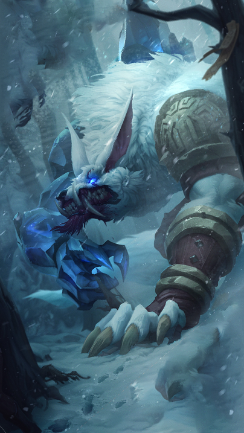
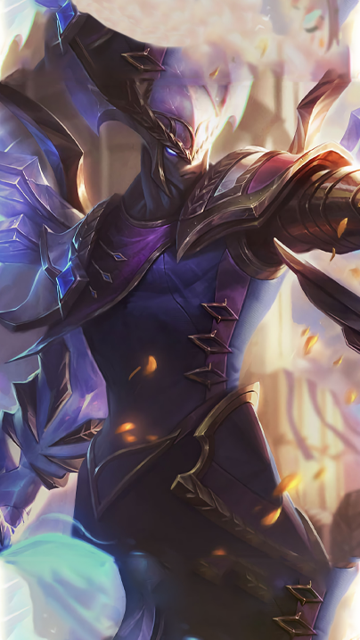

Heroes
Support
Support skills allow you to apply positive effects to allies, and control effects to opponents. Manipulators are weak alone, their true strength is revealed only in a team. In group fights, competently applying buffs to allies and keeping key opponents under control allows you to gain an advantage in battle.
Slayer
Slayers focus on delivering explosive damage to a single target at a rapid pace. The high mobility of fighters allows them to quickly overcome significant distances between him and a potential victim. Having killed the target, the fighter has the ability to also quickly escape from pursuit.

Gunner
Marksmen are champions whose power is revealed mainly through their auto attacks. With a stable damage output, as well as the ability to attack opponents from afar, the Arrows, with the right positioning, are able to eliminate any target.
Warrior
Warrior is one of the champion classes. Warriors are equally good at dealing damage and withstanding attacks from opponents, however, they can usually only attack in melee combat. With high damage per second, Warriors excel in long skirmishes where they can get to the enemy and hold out long enough to defeat them.

Wizard
Typical mages have a range of ranged abilities as well as crowd control effects that allow them to destroy their enemies before they get close enough to strike back. Mages' main source of damage is their skill set, which requires them to spend a lot of the gold they get on items in order to cast more powerful and faster spells.